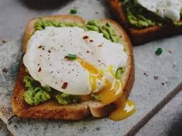

Smashed Avacado On Toast with Poached Egg

A wonderfull and healthy snack
Our avocado and egg toast starts with golden, crispy bread layered with creamy smashed avocado and topped with a perfectly poached egg.
The rich yolk blends into the avocado for a smooth, flavorful bite, while the toast adds the perfect crunch. It’s a fresh, protein-packed option that feels light yet indulgent — ideal for breakfast, brunch, or a quick, healthy bite any time of day.
What you'll need
- 1 avacado
- 1 egg (poched, egg runny)
- unsalted butter
- crushed red peppers (optional)
- 1 slice of whole grain bread
The delicious process
- Start by toasting your bread on a skillet with some melted butter
- while bread is toasting, smash your avacado in a bowl and set to the side
- remove bread from skillet once toasted on both sides and spread an even amount of your avacado spread across the surface
- carefully place hot poached egg in the center and sprinkle lightly with crushed red peppers
- Split egg in half and enjoy!
home